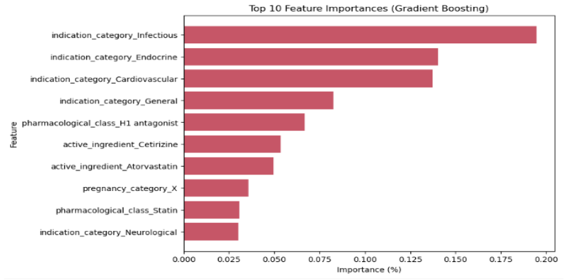
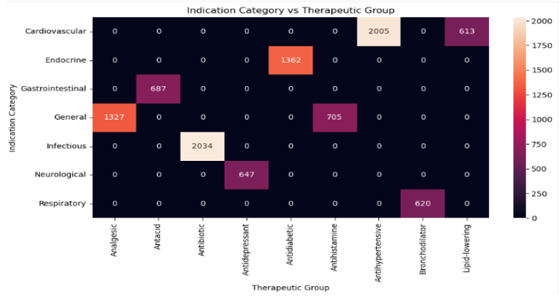
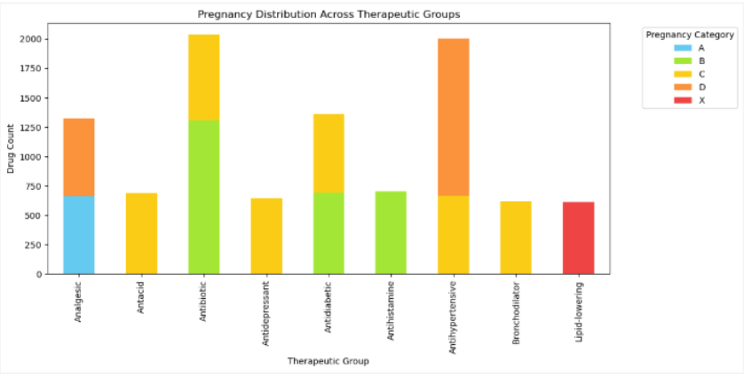
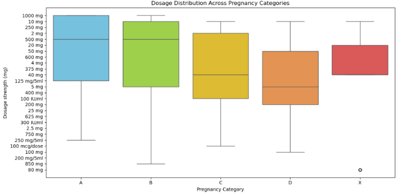

Pharmacy Drug Classification Analysis | May 2026
Overview
This analysis aims to provide a unique examination of how drugs are classified and used across pharmaceutical therapy groups, with a brilliant focus on active ingredients, indication categories, and pregnancy safety risks. Understanding these complex relationships is important not only clinical decision making in prescribing medications, but also patient safety.
From overlapping classifications to pregnancy risk, it is undoubtedly difficult to interpret what is best for patients through patterns without a well structured analysis. This level of ambiguity serves as a challenge in real-world decision making, where misclassification can come at a fatal cost. Proper classification is vital for appropriate treatment and patient safety.
My Motivations & Approach
Understanding how drugs are classified is critical due to their direct impact on prescribing decisions, patient demographics, and overall healthcare efficiency. Medical professionals and patients alike rely heavily on accurate drug classifications to ensure safe usage, especially in the event of pregnancy. Analyzing pharmaceutical data faces a lot of challenges including high dimensionality and categorical complexity, making it difficult to interpret patterns without advanced analytical methods through machine learning.
To address these struggles, this project explores a synthetic pharmaceutical dataset (Sumon, 2026), Pharma Dataset-Drug Classes, Interactions & Cli Pr, mimicking real drug effects with the spotlight set on therapeutic groups. Through machine learning techniques, the analysis efficiently dives into the core layers of pharmaceutical data, making it easier to interpret how certain drugs and their classifications interact with one another. Ultimately, this gives way to capturing more complex relationships in both a nonlinear and linear sense through logistic regression and gradient boosting. By comparing both approaches, it is possible to solve pressing problems such as:
- How strongly does an indication category determine a therapeutic group?
- What are the top active ingredients per therapeutic group?
- How do pregnancy FDA categories differ per therapeutic group? What about dosage?
About The Data
The synthetic dataset used contains 20 columns and 100,000 rows medically-aligned drug behavior resembling real life, making it excellently suitable for crafting a reliable and strong analysis. It provides in-depth information on drug ingredients, pharmacological classes, and dose-related details. Based on the feature importance graph generated by gradient boosting in figure 1, some of the most notable attributes pertaining to therapeutic groups included indication, active ingredients, pharmaceutical class, and pregnancy category. From there, meaningful visualizations relating to these features were explored closely for further insights.
Visualizations




Data Analysis
The visualizations indicate that:
- indication category is highly predictive of therapeutic group (figure 2)
- Certain active ingredients exclusively align with specific drug classes (figure 3)
- Pregnancy categories vary significantly across therapeutic groups, with the analgesic therapeutic group generally being the safest for pregnant women, and lipid-lowering being the least safe (figure 4)
Process
Before training the machine learning models, the dataset was prepared through Python and loaded with the pandas import, with an additional copy saved for visual analysis. df.shape confirmed the size of the dataset matching the project criteria, displaying (10000, 20), and df.dtypes was used to examine all datatypes of the features provided. Next, null values were checked with df.isnull().sum() to address any potential null fields before proceeding. id was a dropped column due to its lack of meaningful predictive information.
The target variable in this analysis was the therapeutic group, which represents the drug classification being predicted, while the remaining columns were used as input features. Although the numerical fields did not need transformation, categorical variables were handled with one-hot encoding, also known as OneHotEncoder, through Scikit-learn (“1. Supervised learning — scikit-learn 1.8.0 documentation”) and paired with handle_unkown=”ignore” for new categories to be processed efficiently for testing.
All imports used:
- Data Handling & visuals
- Model selection
- Preprocessing
- Pipeline & Models
- Evaluation
Methods
Logistuc Regression & Gradient Boosting
The first model used was logistic regression, a classification model implemented from the Scikit-learn pipeline. It predicts the therapeutic group by assuming linear relationships between the encoded drug features and target variable. Since the dataset originally featured many categorical features, one-hot encoding was especially important to implement before running the model as it can only interpret features in numerical form. max_iter=1000 was included in the building of this model to allow enough iterations for proper convergence.
The second algorithm tested was gradient boosting, a learning method that involves building numerous decision trees in sequence, with each new tree focusing on correcting any mistakes of the prior. This allows for the model to tackle more complex patterns in the data, which is useful for pharmaceutical classification as drug categories may depend on combinations of other features rather than just one simple variable.
Overall, these two models were chosen due to how they represent contrasting levels of complexity. Logistic regression offers a more interpretable classification method, while gradient boosting specializes in providing a stronger nonlinear model to capture even more complex relationships. Comparing both models makes it possible to know whether or not a basic linear model or an advanced ensemble method was enough for this dataset in providing the best performance.
Results
The Experimental Setup
The pharmaceutical dataset was divided into a 80/20 split of training and testing sets, meaning 80% of the data was used for training while the remaining 20% served as evaluation. Model performance was evaluated using a classification report, including metrics such as accuracy, precision, recall, and f1-score.
Model Performance & Observations
As shown in the classification reports below (figures 5 and 6), both logistic regression and gradient boosting achieved 1.0 accuracy in training and testing accuracy, indicating perfect classification in all therapeutic groups. While at first glance, these models performed exceptionally well, it is important to note that the dataset as a whole is synthetic and not completely representative of real-world scenarios.
Through print(df["therapeutic_group"].value_counts()), the class distribution of therapeutic groups confirmed that the dataset is relatively balanced, ranging between approximately 600 to 2000 samples per class, meaning bias is not a concern here.